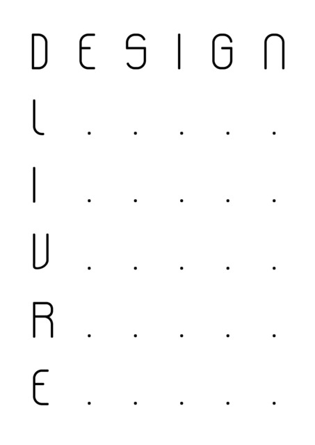

Drica Veloso compartilhou via lista MetaReciclagem [5] o lançamento do livro #DesignLivre [6], feito em uma semana e publicado pelo Clube de Autores [7].

Foi um processo incrível! Me lembrou dos tempos que o Metáfora tinha aquela força tarefa.... :D Foi muito legal colaborar com pessoal da Faber Ludens [8]!
Segundo ela, o projeto é uma tentativa de diferenciar os termos "design livre [9]" e "open design [10]", agregar a gambiarra e a digitofagia ao conceito de design livre, além de refletir o papel do software e hardware livre.